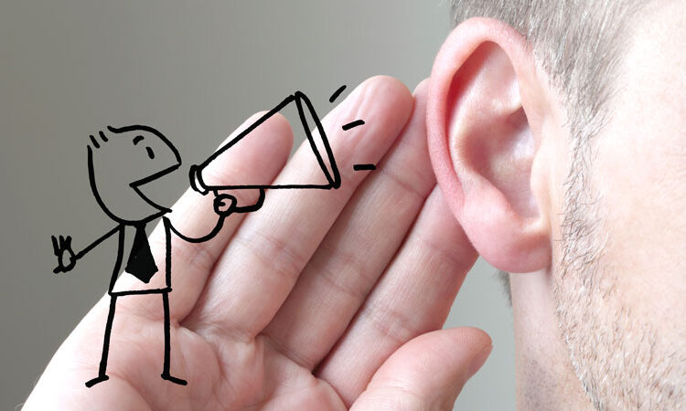

La Importancia de Escuchar
Es demasiado importante escuchar a los demás, ya que nos permite empatizar más y conectar con aquellas personas las cuales tenemos una relación talvez no tan profunda, el video nos da consciencia sobre la importancia de callar y escuchar, la mayoría del tiempo lo pasamos hablando de nosotros sin una escucha activa contando todo de nuestra vida como si fuéramos el centro del mundo cuando realmente no es así, debemos darle cavidad a los demás cuando quieran expresarse y escuchar con la misma emoción y atención que cuando hablamos de nosotros mismos. En lo personal mi experiencia ha sido un poco compleja, ya que he batallado mucho con el egocentrismo y esto debido a que la mayoría del tiempo me la pasaba hablando de mis aptitudes y situaciones, esto a la larga se vuelve un poco insoportable ya que no le damos espacio a los demás de expresarnos y no deja generar un vínculo de empatía de yo con los demás, sin embargo he ido cambiando esa característica a tal grado que puedo escuchar activamente y siempre estar predispuesto a entender y comprender a los demás.

Beneficios
1. Cuando la persona expresa su forma de pensar o su idea, Si es escuchado correctamente sin
interrupciones es más fácil de explicar todo con los de más allá que se genera el debate o democracia al
compartir o dialogar.
2. Ser escuchado evita malos comentarios o retrasos de información ya que al ser entendido y entender a
los de más forma un laso de interacción con los demás ya que esto. Incluye participación. Toma de
decisiones y seguir reglas de acuerdo al tema o reglamento la escucha y el cuidado de toma de
información facilita, la toma de decisiones como tal ya que el cerebro retiene información.
3. En pocas palabras la escucha beneficia a uno mismo y los demás genera el respecto. Y una buena
comunicación.